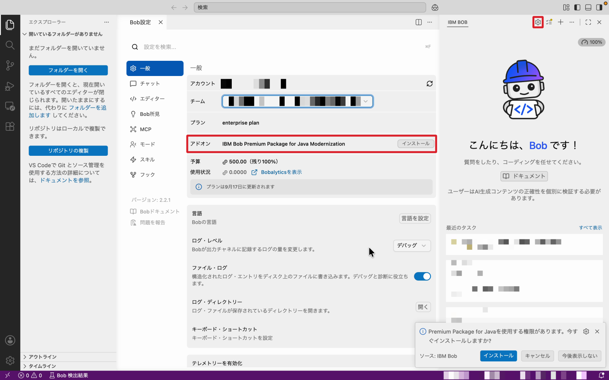
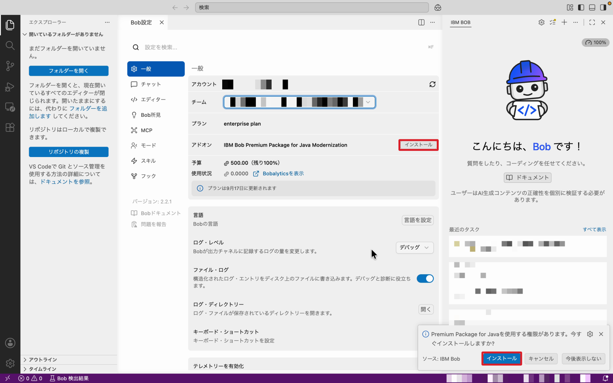
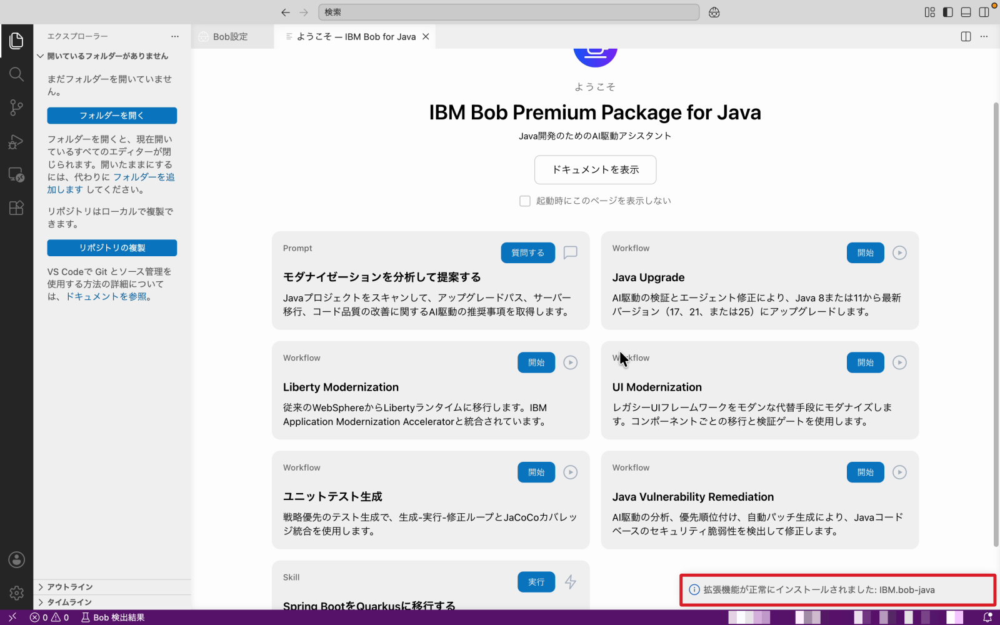
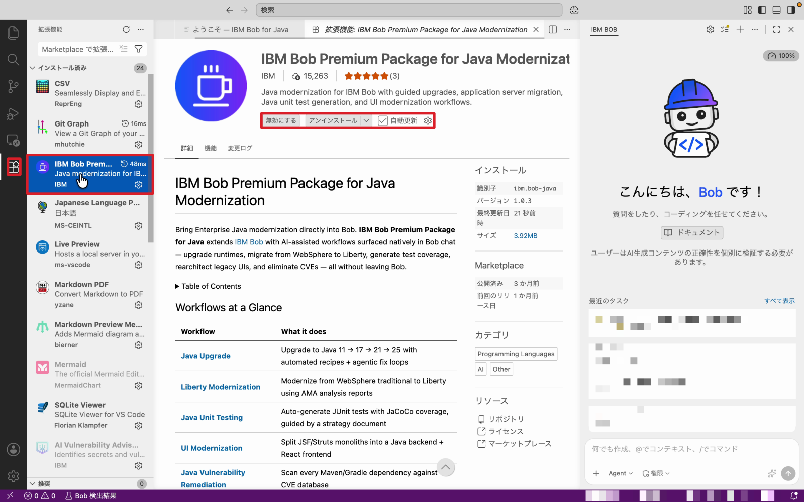

Java Premium Package - 準備編
IBM Bob Premium Package for Java Modernization（以下、Java Modernization パッケージ）のハンズオンを始める前に、必要なツールを準備します。
はじめにお読みください
- 生成 AI の出力にはブレがあります。 同じ操作をしても、Bob の提案内容が毎回同じになるとは限りません。ハンズオン内の出力例はあくまで参考です。
- インストール手順は変わることがあります。 本ページの手順でうまくいかない場合は、各セクションに記載した公式ドキュメントを参照してください。
公式ドキュメント
前提条件の詳細は、IBM Bob 公式ドキュメントの Java Modernization - Prerequisites を参照してください。
⏱️ 所要時間
| セクション | 時間 |
|---|---|
| 1. システム要件の確認 | 10 分 |
| 2. Java バージョン管理ツールの準備 | 10〜15 分 |
| 3. Java Modernization パッケージのインストール | 5 分 |
合計: 約 25〜30 分
1. システム要件の確認
まず、以下の要件を満たしているか確認します。
| 要件 | 内容 |
|---|---|
| Java Development Kit (JDK) | JDK 8 以上。移行先の JDK（例：JDK 21）も事前にインストールしておくことを推奨。Bob が SDKMan / WinGet 経由でインストールすることも可能 |
| IBM Bob | バージョン 2.0.0 以降がインストール済みで、ログイン（認証）済みであること |
| Java Modernization パッケージ | IBM Bob Premium Package for Java Modernization の有効なライセンス |
| Git | ブランチやプルリクエストを管理する Git フロー機能を使う場合に必要 |
1-1. JDK を確認する
ターミナルで以下を実行し、現在の Java のバージョンを確認します。
出力例
java コマンドが見つからない場合は、次の「2. Java バージョン管理ツールの準備」で JDK をインストールしてください。
1-2. IBM Bob のバージョンを確認する
- Bob を起動する
- メニューからバージョン情報（About）を開く
- バージョンが 2.0.0 以降 であることを確認する
2.0.0 未満の場合は、最新版にアップデートしてください。あわせて、Bob にログインできていることも確認します。
公式ドキュメント
- Bob のダウンロード：IBM Bob ダウンロードページ
- インストール・セットアップ：IBM Bob ドキュメント
1-3. Java Modernization パッケージのライセンスを確認する
Java Modernization パッケージは Premium Package（有償の追加ライセンス） です。ハンズオンで使用するライセンスについては、ハンズオンの講師に確認してください。ライセンスが割り当てられているかどうかは、「3-1. ライセンスにパッケージが紐づいていることを確認する」の手順で確認できます。
管理者の方へ
Premium Package をユーザーに割り当てる方法は、公式ドキュメントの Managing premium packages を参照してください。
1-4. Git を確認する
git version 2.x.x のように表示されれば OK です。表示されない場合はインストールしてください。
公式ドキュメント
- Git のインストール：Git - Downloads
2. Java バージョン管理ツールの準備
Bob はワークフローの途中で、移行先の Java をインストール・切り替えるためにバージョン管理ツールを使います。OS ごとに必要なツールが異なります。
SDKMan がインストール済みか確認する
バージョンが表示されれば、インストール済みです。command not found: sdk と表示された場合は、以下の手順でインストールします。
SDKMan をインストールする
公式ドキュメント
- SDKMan のインストール：SDKMAN! - Installation
- SDKMan の使い方（
sdk list/sdk installなど）：SDKMAN! - Usage
インストール後、シェルの設定ファイルで SDKMan が読み込まれていることを確認します。
以下のような行が含まれていれば OK です。
export SDKMAN_DIR="$HOME/.sdkman"
[[ -s "$HOME/.sdkman/bin/sdkman-init.sh" ]] && source "$HOME/.sdkman/bin/sdkman-init.sh"
ターミナルを再起動してください
設定を反映するために、ターミナルを開き直してください。Bob から SDKMan を認識させるため、Bob も再起動しておくと確実です。
移行先の JDK をインストールする（推奨）
Bob にインストールしてもらうこともできますが、事前にインストールしておくとワークフローがスムーズに進みます。
# インストール可能な JDK の一覧を表示
sdk list java
# 例：Temurin の JDK 21 をインストール（識別子は一覧に表示されたものを指定）
sdk install java 21.0.5-tem
# インストール済みのバージョンを確認
sdk list java | grep installed
デフォルトの Java について
インストール時に「デフォルトにするか」聞かれます。普段使っている Java を変えたくない場合は No を選んでください。切り替えは sdk use java <識別子> で行えます。
WinGet がインストール済みか確認する
PowerShell で以下を実行します。
v1.x.x のように表示されれば、インストール済みです。表示されない場合は、Microsoft Store から アプリ インストーラー（App Installer） をインストールしてください。
公式ドキュメント
- WinGet のインストール・使い方：WinGet ツールを使用したアプリケーションのインストールと管理
Bob とターミナルを再起動してください
WinGet をインストールしたら、Bob と開いているターミナルをすべて再起動してください。更新された PATH を Bob が認識できるようになります。
移行先の JDK をインストールする（推奨）
# インストール可能な JDK を検索
winget search OpenJDK
# 例：Microsoft Build of OpenJDK 21 をインストール
winget install Microsoft.OpenJDK.21
# インストールを確認
winget list OpenJDK
公式ドキュメント
- Microsoft Build of OpenJDK のインストール：Microsoft Build of OpenJDK のインストール
- Eclipse Temurin を使う場合：Adoptium - Installation
3. Java Modernization パッケージのインストール
Java Modernization パッケージは、Bob の拡張機能として提供されています。ライセンスに紐づいていることを確認してから、拡張機能をインストールします。
3-1. ライセンスにパッケージが紐づいていることを確認する
- Bob のチャットパネル右上の ⚙（設定）アイコンをクリックし、「Bob設定」を開く
- 左メニューの 「一般」 を選択する
- 「アドオン」 の欄に
IBM Bob Premium Package for Java Modernizationが表示されていることを確認する

アドオンが「なし」と表示される場合
- 複数のチームに所属している場合は、「チーム」 のプルダウンで、パッケージが割り当てられたチームを選択しているか確認してください。
- それでも表示されない場合は、ライセンスが割り当てられていません。ハンズオンの講師に確認してください。
3-2. 拡張機能をインストールする
アドオン欄の右にある 「インストール」 をクリックします。
画面右下に「Premium Package for Java を使用する権限があります。今すぐインストールしますか？」という通知が表示された場合は、通知の 「インストール」 をクリックしてもインストールできます。

インストールが完了すると、画面右下に 「拡張機能が正常にインストールされました: IBM.bob-java」 と表示され、「ようこそ — IBM Bob for Java」 のページが開きます。

このページには、ハンズオンで使用するワークフロー（Java Upgrade、Liberty Modernization、UI Modernization など）が並んでいます。
3-3. 拡張機能が有効になっていることを確認する
- 左側のアクティビティバーで 拡張機能アイコン をクリックする
- 「インストール済み」の一覧に
IBM Bob Premium Package for Java Modernizationがあることを確認し、クリックして詳細を開く - ボタンが 「無効にする」「アンインストール」 と表示されていることを確認する（これで拡張機能がオンになっています）

「有効にする」と表示されている場合
拡張機能がオフになっています。「有効にする」 をクリックしてオンにしてください。
準備完了
以下を確認できたら、ハンズオンの準備は完了です。
- JDK 8 以上がインストールされている（移行先の JDK もインストール済みが推奨）
- Bob 2.0.0 以降がインストール・ログイン済み
- Java Modernization パッケージがライセンスに紐づいている
- Git が使える
- SDKMan（macOS / Linux）または WinGet（Windows）が使える
- Java Modernization パッケージの拡張機能がインストールされ、有効になっている